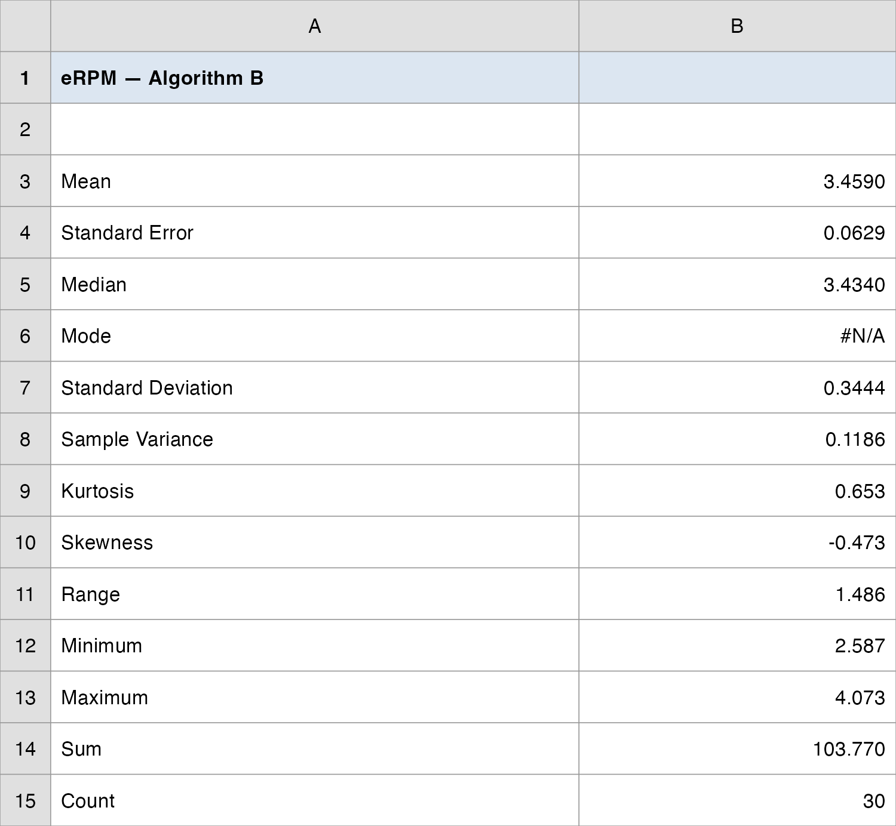
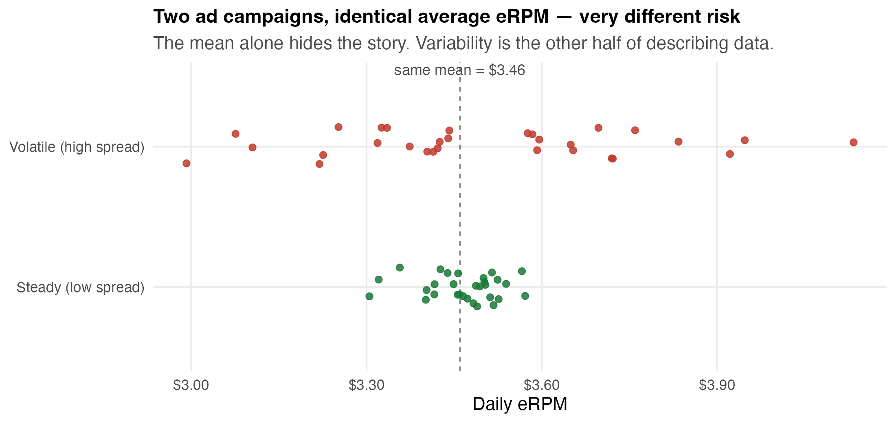
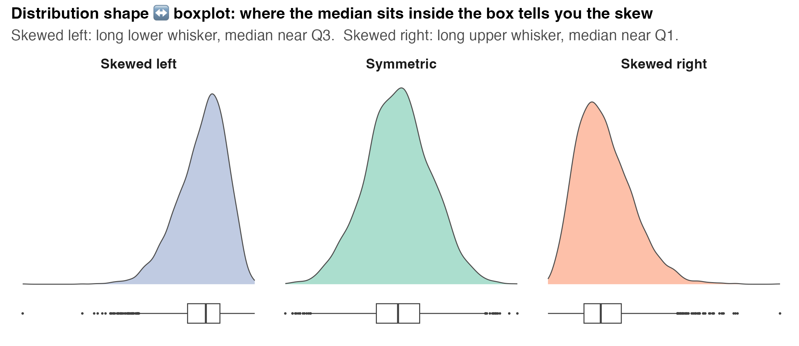
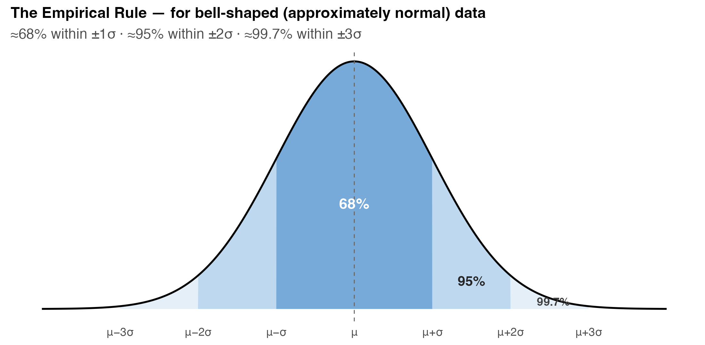
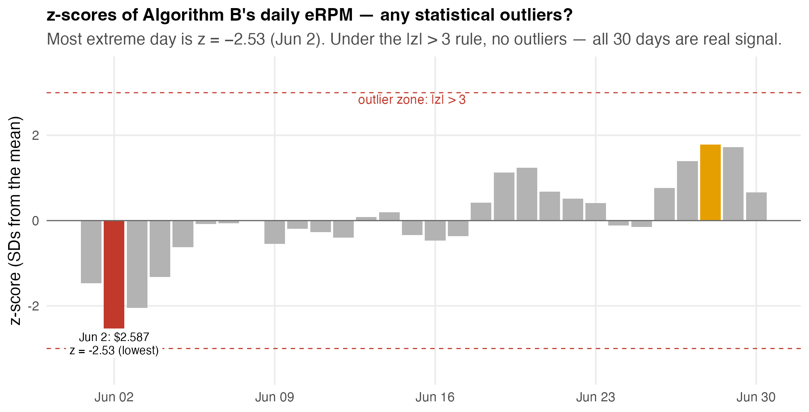
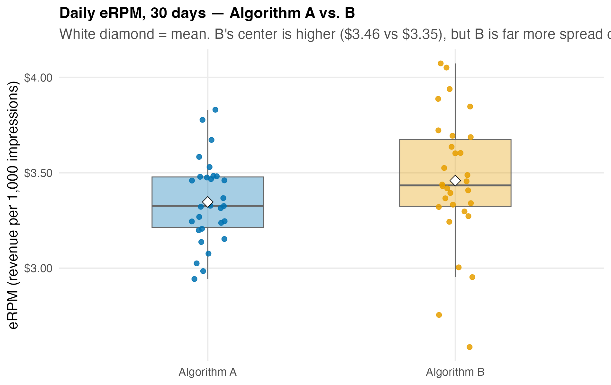
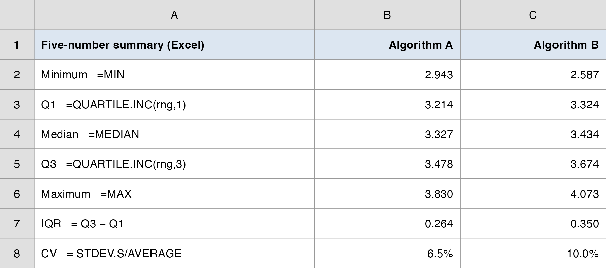
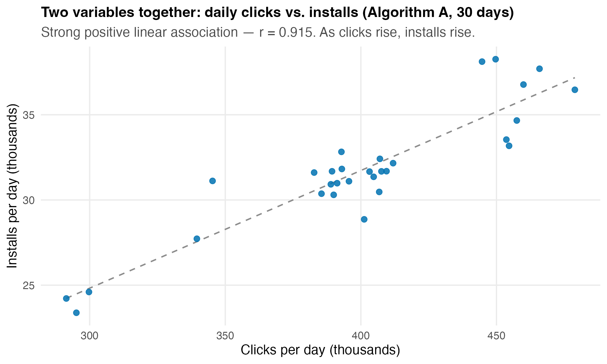
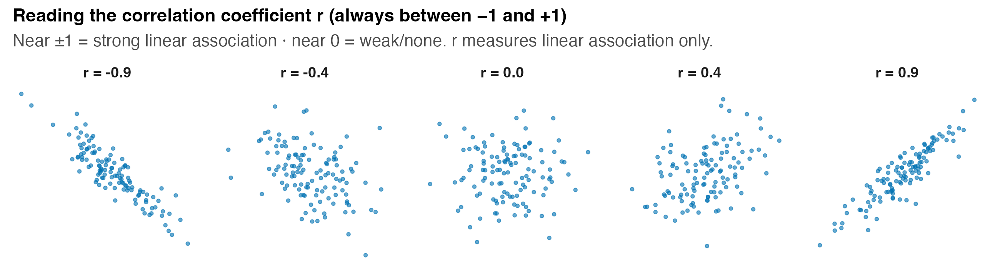

QM 6700: Business Analytics
Descriptive Statistics II: Numerical Measures
Professor
Davi Moreira
Davi Moreira
Overview
- Case Spotlight: A/B Testing at Vungle
- Beyond the center: measures of variability
- range, IQR, variance, SD, coefficient of variation
- Distribution shape: skewness
- Relative location: z-scores, Chebyshev, the Empirical Rule
- Detecting outliers
- The five-number summary and the boxplot
- Measures of association: covariance & correlation
- Building an A-vs-B descriptive dashboard
- From “B’s mean is higher” to “is B’s edge real or just noise?”
Case Spotlight: A/B Testing at Vungle
Recap — Where We Left Off
Vungle is a mobile ad-tech startup: it serves 15-second video ads inside other apps and earns revenue mainly when a viewer installs the advertised app.
The metric that pays the bills is eRPM — effective revenue per 1,000 impressions.
Two analysts built a new ad-serving algorithm (B) and ran it head-to-head against the current one (A) for the whole month of June 2014.
Last time we computed the centers: A’s mean eRPM is $3.347, B’s is $3.459 — B’s average sits $0.11 higher.
A manager glances at that gap and says: “B wins — roll it out.”
The Brief — Today’s Managerial Question
“B’s average daily eRPM ran about $0.11 higher than A’s. Before I brief the CEO — is B’s edge real, or is it just noise? How confident can I be in that one number?”
The mean is only half the story. A center tells you where the data sit; it says nothing about how spread out, lopsided, or risky they are.
Two algorithms can share the same average and behave completely differently day to day.
How today’s studio runs: I demo each measure on a textbook anchor → your team builds an A-vs-B descriptive dashboard on the Vungle data → we debrief what you can honestly tell the CEO.
Why the Mean Alone Misleads

- Same mean ($3.46), opposite risk. The CEO who only hears “average $3.46” cannot tell these two campaigns apart.
- Today we add the other half of describing data: spread, shape, and how two variables move together.
How Today’s Tools Build the CEO Brief
Each tool answers one question the CEO will ask about Vungle’s data:
| The CEO asks… | The tool |
|---|---|
| “How risky is each algorithm day to day?” | Range, IQR, variance, SD, CV |
| “Is the eRPM distribution lopsided?” | Skewness |
| “Was any day weirdly high or low?” | z-scores, Empirical Rule, Chebyshev, outliers |
| “Show me A vs. B at a glance.” | Five-number summary + boxplot |
| “Do clicks and installs move together?” | Covariance & correlation |
- By the end, your team turns these into a one-screen A-vs-B dashboard — the manager’s first honest read.
Measures of Variability
Why Spread Matters as Much as Center
Choosing between supplier A and supplier B, you weigh the average delivery time and the variability together: a supplier that is fast on average but wildly inconsistent can wreck a schedule.
Same for Vungle: an algorithm with a slightly higher mean eRPM but huge day-to-day swings is a riskier bet than a steady one.
Five workhorse measures of variability, smallest toolkit to richest:
| Measure | What it captures |
|---|---|
| Range | total swing (max − min) |
| IQR | swing of the middle 50% |
| Variance / SD | typical distance from the mean (uses all the data) |
| Coefficient of variation | spread relative to the mean (unit-free) |
Range and Interquartile Range (IQR)
- Range = largest value − smallest value. Simplest measure — but driven entirely by the two extremes, so a single odd day distorts it.
\[ \text{Range} = x_{\max} - x_{\min} \]
- Interquartile range (IQR) = the range of the middle 50% of the data:
\[ \text{IQR} = Q_3 - Q_1 \]
IQR throws away the top 25% and bottom 25%, so it ignores extremes — a steadier read of “typical” spread.
Excel:
=MAX(rng)-MIN(rng)for the range;=QUARTILE.INC(rng,3)-QUARTILE.INC(rng,1)for the IQR.
Variance — the Average Squared Distance from the Mean
- Variance uses every observation: it averages the squared deviations from the mean. Squaring keeps positives and negatives from cancelling and punishes big misses.
\[ \text{Sample: } \; s^2 = \frac{\sum_{i=1}^{n}(x_i - \bar{x})^2}{n-1} \qquad\qquad \text{Population: } \; \sigma^2 = \frac{\sum_{i=1}^{N}(x_i - \mu)^2}{N} \]
Why divide by \(n-1\) for a sample? We “spend” one degree of freedom estimating \(\bar{x}\) from the same data; dividing by \(n-1\) corrects the bias so \(s^2\) is an honest estimate of \(\sigma^2\).
The catch: variance is in squared units (dollars²) — hard to interpret directly. That is what the standard deviation fixes.
Standard Deviation and the Notation Table
- Standard deviation = the positive square root of the variance — back in the original units (dollars), so it reads as “a typical day lands about this far from the mean.”
\[ s = \sqrt{s^2} \qquad\qquad \sigma = \sqrt{\sigma^2} \]
| Quantity | Sample (statistic) | Population (parameter) |
|---|---|---|
| Mean | \(\bar{x}\) | \(\mu\) |
| Variance | \(s^2\) | \(\sigma^2\) |
| Standard deviation | \(s\) | \(\sigma\) |
- Excel:
=VAR.S/=STDEV.Sfor a sample;=VAR.P/=STDEV.Pfor a full population. Our 30 days are a sample of all possible days → use the.Sversions.
Coefficient of Variation — Spread Relative to Size
- A standard deviation of $0.34 is large for eRPM but trivial for a stock price. The coefficient of variation (CV) rescales spread by the mean, so you can compare differently-sized series:
\[ \text{CV} = \left( \frac{s}{\bar{x}} \right) \times 100\% \]
It is unit-free (a percentage) — “the SD is X% of the mean.”
Vungle read: even before testing, CV tells you which algorithm is relatively more volatile — exactly the risk question the CEO cares about.
Excel:
=STDEV.S(rng)/AVERAGE(rng).
Anchor Example: Two Suppliers’ Delivery Times
A purchasing manager compares delivery times (hours) from two carriers over five shipments. Same mean — very different reliability.
| Ship 1 | Ship 2 | Ship 3 | Ship 4 | Ship 5 | Mean | Range | \(s\) | CV | |
|---|---|---|---|---|---|---|---|---|---|
| Carrier A | 14 | 15 | 16 | 15 | 15 | 15 | 2 | 0.71 | 4.7% |
| Carrier B | 9 | 21 | 14 | 19 | 12 | 15 | 12 | 4.85 | 32.3% |
- Identical average (15 hrs) — but A’s range is 2 hours and B’s is 12.
- A’s CV is 4.7%; B’s is 32.3%. A is the dependable carrier; B is a gamble.
- The mean could not tell them apart — variability did. This is the lesson we now take to Vungle.
Vungle Variability: A vs. B
Computing each measure on the 30 daily eRPM values, by algorithm:
| Measure | Algorithm A | Algorithm B | Read |
|---|---|---|---|
| Mean | $3.347 | $3.459 | B’s center is $0.11 higher |
| Range | 0.887 | 1.486 | B swings far more day to day |
| IQR (\(Q_3-Q_1\)) | 0.264 | 0.350 | even the middle 50% is wider for B |
| Variance (\(s^2\)) | 0.047 | 0.119 | |
| Standard deviation (\(s\)) | 0.217 | 0.344 | a typical B-day is $0.34 off its mean |
| CV | 6.5% | 10.0% | B is ~50% more volatile, relative to its size |
- B earns more on average — and is markedly riskier. Higher mean, higher spread.
- That is the real headline for the CEO: “B’s edge comes with more volatility.” The mean hid it; variability reveals it.
Excel: Descriptive Statistics in One Click
Data → Data Analysis →
Descriptive Statistics
- Input Range: the
erpmvalues for Algorithm B - check Summary statistics
One run returns mean, SE, median, SD, variance, skewness, kurtosis, range, min, max — the entire numerical toolkit of today’s lecture in a single panel.
Distribution Shape & Relative Location
Skewness — Is the Distribution Lopsided?
- Center and spread still miss one thing: symmetry. Skewness measures the lopsidedness of a distribution.
\[ \text{Skewness} = \frac{n}{(n-1)(n-2)} \sum_{i=1}^{n}\left( \frac{x_i - \bar{x}}{s} \right)^3 \]
| Shape | Skewness | Mean vs. median |
|---|---|---|
| Skewed left (long lower tail) | negative | mean < median |
| Symmetric | ≈ 0 | mean ≈ median |
| Skewed right (long upper tail) | positive (often > 1) | mean > median |
- Quick check, no formula: compare mean and median. If they are close, the data are roughly symmetric.
Vungle Shape Check
- Compare each algorithm’s mean to its median:
| Mean | Median | Skewness | Read | |
|---|---|---|---|---|
| A | $3.347 | $3.327 | +0.24 | mean slightly above median → mild right skew |
| B | $3.459 | $3.434 | −0.47 | a few low days pull the left tail → mild left skew |
Both are close to symmetric (|skew| well under 1) — good news, because the Empirical Rule we are about to use assumes a roughly bell shape.
B’s slight left skew traces to a couple of weak early days (a slow June 2–3) — worth flagging, not alarming.
Boxplots Show Shape at a Glance

- Where the median line sits inside the box tells you the skew: centered → symmetric; pushed toward \(Q_3\) with a long lower whisker → skewed left; pushed toward \(Q_1\) with a long upper whisker → skewed right.
z-Scores — How Unusual Is One Day?
- A z-score (standardized value) reports how many standard deviations a value sits from the mean — a unit-free measure of relative location:
\[ z_i = \frac{x_i - \bar{x}}{s} \]
\(z < 0\) → below the mean; \(z > 0\) → above; \(z = 0\) → exactly at the mean. A \(z\) of \(+2\) means “two SDs above average.”
It lets you compare positions across different scales — a $4.07 eRPM day and a 38,000-install day both become “how many SDs from typical?”
Excel:
=STANDARDIZE(x, mean, standard_deviation).
The Empirical Rule — for Bell-Shaped Data

- When data are roughly bell-shaped: ≈68% fall within ±1 SD, ≈95% within ±2 SD, ≈99.7% within ±3 SD of the mean.
- Read as a probability: a randomly chosen day has ≈ a 95% chance of landing within 2 SDs of the mean.
Empirical Rule on Vungle’s B
- B’s mean is $3.459 and SD is $0.344, so the Empirical Rule predicts:
| Band | Interval | Rule predicts | Actually observed |
|---|---|---|---|
| \(\bar{x} \pm 1s\) | $3.11 – $3.80 | ≈ 68% | 70% (21/30) |
| \(\bar{x} \pm 2s\) | $2.77 – $4.15 | ≈ 95% | 93% (28/30) |
| \(\bar{x} \pm 3s\) | $2.43 – $4.49 | ≈ 99.7% | 100% (30/30) |
The observed shares track the rule closely → B’s eRPM is well-approximated by a bell shape. (We will fit that bell formally in a later topic.)
Practical use: a day outside $2.77–$4.15 is in the rare 5% tail — worth a second look.
Chebyshev — When You Can’t Assume a Bell
- The Empirical Rule needs a bell shape. Chebyshev’s Theorem makes a weaker promise that holds for any distribution:
\[ \text{At least } \left( 1 - \frac{1}{z^2} \right) \text{ of the data lie within } z \text{ SDs of the mean} \quad (z > 1) \]
| \(z\) | Empirical Rule (bell only) | Chebyshev (any shape) |
|---|---|---|
| 2 | ≈ 95% | at least 75% |
| 3 | ≈ 99.7% | at least 89% |
| 4 | ≈ 100% | at least 94% |
- Chebyshev is the safe, conservative bound; the Empirical Rule is tighter but only valid for bell-shaped data. Check the shape, then pick the rule.
Detecting Outliers — Two Rules That Can Disagree
- An outlier is an unusually small or large value. It may be a recording error, a wrongly-included point, or a genuinely unusual but valid observation. Two common rules:
| Rule | Flags a value as an outlier when… |
|---|---|
| z-score | \(|z| > 3\) (more than 3 SDs from the mean) |
| Boxplot (1.5 × IQR) | below \(Q_1 - 1.5\,\text{IQR}\) or above \(Q_3 + 1.5\,\text{IQR}\) |
They do not always agree — the IQR rule is more sensitive in the tails. On Vungle’s B, two slow days (June 2 at $2.587 and June 3 at $2.755) sit below the boxplot lower fence (≈$2.80), yet both stay inside the \(|z|>3\) cutoff (June 2’s \(z = -2.53\) is the most extreme). The boxplot rule flags two days; the z-rule flags none.
A flag is an invitation to investigate, not a delete button. Ask why before you drop a point.
Outlier Hunt on Vungle’s B

- The most extreme day is June 2 at $2.587, z = −2.53 — notable, but not an outlier by the \(|z| > 3\) rule (which flags no days here).
- The boxplot rule flags two days below the $2.80 fence — June 2 and June 3 ($2.755). Same data, two rules, different verdicts — judgment decides.
Five-Number Summary & Boxplot
The Five-Number Summary
- Five numbers summarize a whole distribution — center, spread, and shape in one compact line:
\[ \underbrace{x_{\min}}_{\text{Min}} \;\le\; \underbrace{Q_1}_{\text{25th}} \;\le\; \underbrace{Q_2}_{\text{Median}} \;\le\; \underbrace{Q_3}_{\text{75th}} \;\le\; \underbrace{x_{\max}}_{\text{Max}} \]
| Min | \(Q_1\) | Median | \(Q_3\) | Max | |
|---|---|---|---|---|---|
| Algorithm A | 2.943 | 3.214 | 3.327 | 3.478 | 3.830 |
| Algorithm B | 2.587 | 3.324 | 3.434 | 3.674 | 4.073 |
- Excel:
=MIN,=QUARTILE.INC(rng,1),=MEDIAN,=QUARTILE.INC(rng,3),=MAX.
Anatomy of a Boxplot
- A boxplot draws the five-number summary as a picture:
- The box spans \(Q_1\) to \(Q_3\) (the middle 50%); its height is the IQR.
- A line inside the box marks the median.
- Whiskers reach to the most extreme points still inside the fences:
- Lower fence: \(Q_1 - 1.5\,\text{IQR}\) · Upper fence: \(Q_3 + 1.5\,\text{IQR}\).
- Points beyond the fences are plotted individually as outliers.
- Excel 2016+: select the data → Insert → Statistic Chart → Box and Whisker.
A-vs-B Boxplots Side by Side

- One picture carries the whole brief: B’s box is higher (greater median/mean) and taller (greater spread), with two low days (June 2 and June 3) falling past the lower fence.
- This single chart will anchor your team’s dashboard.
Building the Five-Number Summary in Excel
Five formula cells per column give the whole summary — then Insert → Box and Whisker draws it.
- IQR and CV drop straight out of the same cells.
- B’s IQR (0.350) is wider than A’s (0.264): even the calm middle of B’s distribution is more spread out.

Measures of Association
From One Variable to Two
So far we have summarized one variable at a time. Managers usually care about relationships: do clicks drive installs? does spending lift sales?
Two numerical measures of the linear relationship between two variables:
| Measure | Tells you | Range |
|---|---|---|
| Covariance | the direction of the linear relationship | any value (unit-dependent) |
| Correlation | direction and strength, on a fixed scale | always between −1 and +1 |
- Start with a scatter plot — always look before you compute.
A Scatter Plot Comes First

- Each dot is one day for Algorithm A: its clicks (x) and installs (y). The cloud slopes up — more clicks, more installs.
- A scatter plot reveals the direction, strength, and any non-linearity the single numbers might hide.
Covariance — Direction of the Relationship
- Covariance averages the product of paired deviations from each variable’s mean:
\[ \text{Sample: } \; s_{xy} = \frac{\sum_{i=1}^{n}(x_i - \bar{x})(y_i - \bar{y})}{n-1} \qquad \text{Population: } \; \sigma_{xy} = \frac{\sum (x_i - \mu_x)(y_i - \mu_y)}{N} \]
Sign is the message: positive → the variables move together; negative → they move opposite; near zero → no linear relationship.
But the magnitude is uninterpretable: covariance depends on the units. Rescale clicks from raw counts to thousands and the number changes — it captures direction, not strength.
Excel:
=COVARIANCE.S(array1, array2)(sample) or=COVARIANCE.P(...)(population).
Correlation — Direction and Strength
- The correlation coefficient divides covariance by the two standard deviations, stripping out the units:
\[ r_{xy} = \frac{s_{xy}}{s_x \, s_y} \]
| \(r\) near… | Linear relationship |
|---|---|
| +1 | strong positive |
| 0 | weak / none |
| −1 | strong negative |
- Always between −1 and +1, unit-free, so it compares across any two variables. Excel:
=CORREL(array1, array2).
Reading r — a Visual Gallery

- As \(|r|\) grows, the cloud tightens toward a line. \(r\) captures linear association only — a perfect U-shape can have \(r \approx 0\).
Vungle Association: Clicks vs. Installs
For Algorithm A’s 30 days, with clicks and installs measured in thousands:
| Quantity | Value | Excel |
|---|---|---|
| Sample covariance \(s_{xy}\) | +163.7 | =COVARIANCE.S(clicks_k, installs_k) |
| SD of clicks (thousands) | 48.69 | =STDEV.S(clicks_k) |
| SD of installs (thousands) | 3.67 | =STDEV.S(installs_k) |
| Correlation \(r\) | +0.915 | =CORREL(clicks, installs) |
- Covariance is positive → clicks and installs move together. But “163.7” means nothing on its own.
- Correlation +0.915 says the same direction and that the relationship is strong — check: \(163.7 / (48.69 \times 3.67) = 0.915\).
- Managerial read: days with more clicks reliably bring more installs — the funnel holds together.
Correlation Is Not Causation
A high \(r\) means two variables move together — not that one causes the other.
Clicks and installs are both partly driven by daily traffic volume — a lurking third variable.
The internet is full of nonsense high correlations (cheese consumption vs. bedsheet accidents).
Only the experimental design (random assignment of A vs. B) licenses causal claims — correlation alone never does.

⏱️ Team Sprint — Build the A-vs-B Descriptive Dashboard
Decide: what can you honestly tell the CEO about B’s edge — center, spread, and risk?
Data: data/vungle_descriptive.xlsx (or data/vungle_daily.csv) · Time: ~18 min
- Center & spread: with Data → Data Analysis → Descriptive Statistics, get the mean, median, SD, and range of
erpmfor A and for B; compute the CV for each (=STDEV.S/AVERAGE). - Shape & outliers: compare each mean to its median (skew?); flag any day with |z| > 3 (
=STANDARDIZE). - Picture: build the five-number summary (
=QUARTILE.INC) and insert a Box & Whisker chart for A and B together. - Read it: write two sentences — (1) how A and B compare on center and spread, (2) what that means for the rollout decision.
Submit before you leave (graded, one slide per group): your call to the CEO on B’s edge + the center and spread numbers behind it (means, SDs, CVs, the boxplot) + the two things you would challenge in the analysis.
Debrief — The CEO Brief
What the Dashboard Says
Center: B’s mean eRPM ($3.459) sits about $0.11 above A’s ($3.347) — B’s edge is real in this sample.
Spread: B is markedly riskier — SD $0.344 vs. $0.217, CV 10.0% vs. 6.5%, a wider IQR and a wider range. Higher reward comes with higher volatility.
Shape: both are roughly symmetric (|skew| < 0.5); no day is an outlier by the \(|z|>3\) rule, though B’s two slow days (June 2 & June 3) fall past the boxplot’s lower fence.
The honest two-sentence read: “Over 30 days, B averaged $0.11 more per 1,000 impressions than A, but with ~50% more day-to-day volatility. Whether that $0.11 edge is real signal or sampling noise is a question description alone cannot settle — that needs a hypothesis test.”
Manager’s Takeaway
One sentence: B earns more on average ($3.46 vs. $3.35) but is more volatile (SD $0.34 vs. $0.22, CV 10% vs. 6.5%) — the mean was only half the story.
One number to remember: CV — Algorithm B’s spread is 10% of its mean vs. A’s 6.5%; that is the risk the CEO must weigh against the $0.11 reward.
One caveat: description summarizes the 30 days we have; it cannot tell us whether B’s $0.11 edge generalizes to all future traffic. Is the edge real or noise? is an inference question — the heart of Topics 7–9.
Practice with the real data:
data/vungle_daily.csv+ the Analysis ToolPak → reproduce the A-vs-B dashboard. Worked solutions:data/vungle_descriptive.xlsx.
Summary
Some key takeaways from this session:
- The center is only half the story. Range, IQR, variance, SD, and CV describe spread — and two algorithms with the same mean can carry very different risk.
- Standard deviation puts spread back in the data’s own units; CV makes spread comparable across differently-sized series.
- Shape (skewness) and relative location (z-scores, Empirical Rule, Chebyshev) tell you whether a value is unusual; outlier rules can disagree, so investigate before you delete.
- The five-number summary and boxplot compress center, spread, and shape into one picture — ideal for an A-vs-B comparison.
- Covariance gives the direction of a relationship; correlation (\(-1\) to \(+1\)) gives direction and strength — but correlation is not causation.
- For Vungle: B earns more but is riskier — and whether its $0.11 edge is real is the inference question we tackle next.
Carry-forward
Homework (individual): today’s tools (center, spread, shape, boxplots, and correlation) are drilled on HW1, individual problem sets in the previous-edition format, posted on Brightspace. Run them yourself so you can check an analyst who uses them.
Next time: we move from describing uncertainty to quantifying it — Probability: the chance a random impression installs, and how that chance changes once it clicks.
Thank you!
Business Analytics